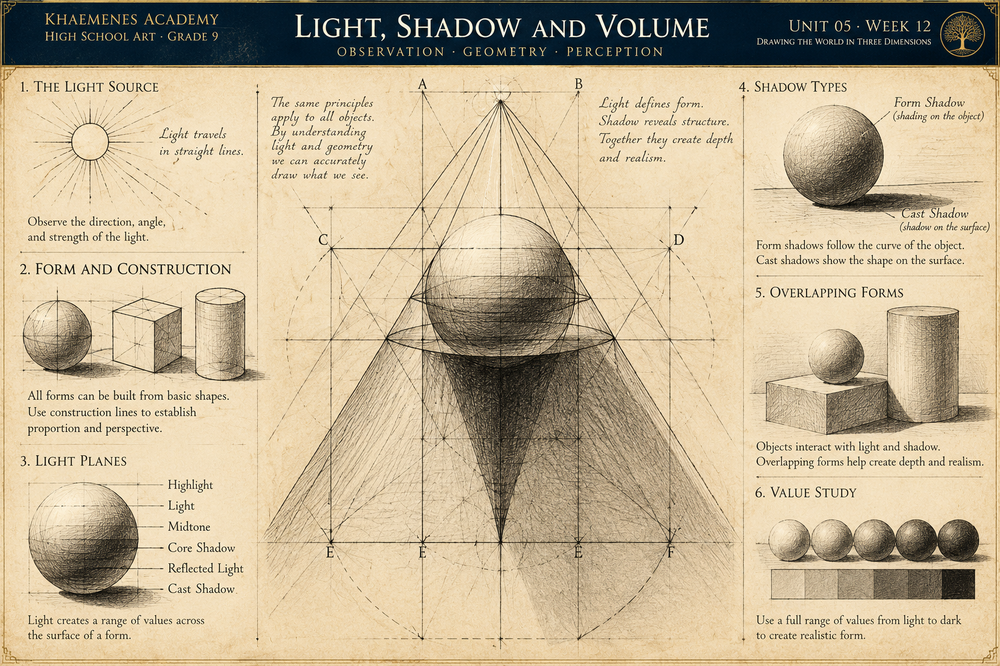

Light family
Highlight: a brighter response on a surface. Light plane: a region oriented toward illumination. Halftone: a transitional value between light and shadow.
KHAEMENES ACADEMY · ART 101 · UNIT 05
Unit 05 · Observation · Geometry · Perspective
How can artists use the direction of light and relationships among values to make flat marks describe convincing three-dimensional form?
Build on Week 11's geometric construction. Observe real objects under controlled lighting; distinguish what you can see from what you infer; use sketches, value studies and revision to demonstrate your reasoning.
Examine the original Khaemenes Academy study inspired by Renaissance investigations of light and geometry. Look for the relationship between the apparent light source, the construction lines, the illuminated forms, and the regions of shadow. Use the diagram as an artistic model, then test its relationships by observing real objects under a movable lamp.

1 · Source: locate the suggested light source and draw arrows in your notebook to describe its direction. 2 · Construction: identify any straight guide lines, axes, or projected boundaries used to organize the study. 3 · Form: compare lighter and darker regions, noting where the surface turns away from the light. 4 · Projection: distinguish shadows on a form from shadows projected onto another surface. 5 · Verification: arrange a real object and lamp, sketch the resulting shadows, and record one similarity and one difference from the illustration. Do not assume every historical diagram uses modern optical terminology.
Highlight: a brighter response on a surface. Light plane: a region oriented toward illumination. Halftone: a transitional value between light and shadow.
Form shadow: the portion of a form turned away from direct light. Core shadow: often a darker band near the transition on a rounded form. Reflected light: illumination bounced from surroundings.
Cast shadow: light blocked onto another surface. Contact/occlusion shadow: a frequently darker area where objects meet. Shadow edges vary with the light source and geometry.
Use a single desk lamp and three matte objects. On the sphere, follow gradual changes from lit surface to shadow; on the cube, compare the values of differently oriented planes; on the cylinder, compare the side's tonal transition with the ellipse of its top. Mark the cast-shadow direction for each. Move the lamp to a new position and redraw only the large value masses before adding detail.
Important distinction: a cast shadow is not automatically a fixed triangle, and its precise shape depends on the source, surface, and object's geometry. Treat geometric rays as an explanatory model and confirm against observation.
Set a sphere-like object, a box, and a cylinder under one lamp. Identify the light source, highlight, halftone, form shadow, possible core shadow, reflected light, cast shadow, and darkest contact area. Draw arrows indicating light direction. Avoid inventing reflected light when it is not visible.
Place a matte ball on neutral paper. With light above-left, note the bright upper-left region, curved transition into shadow, and cast shadow displaced broadly away from the light. Move the lamp above-right, then higher overhead. Make three thumbnail value maps; record what changes and what remains constant. The precise shadow geometry depends on light size, distance, object and surface.
Draw a seven-step graphite value scale from paper white to your darkest practical mark. Shade a sphere with gradual transitions, a cube with distinct planes, and a cylinder with a continuous lateral value change. Repeat one form using a dark local-value material and explain why illumination and surface color are not interchangeable.
Arrange at least three simple forms and draw from direct observation for 25–40 minutes. Begin with axes, ellipses and bounding shapes; then map the major light and shadow families before rendering detail. Photograph or preserve the first state. Recheck the light direction, shadow contact and one proportion; revise and explain each correction.
Compare an attributed Renaissance-era study of light with a documented later or contemporary observational drawing. Use museum or primary-source records; do not ascribe a particular drawing or scientific conclusion to Leonardo without evidence. Record creator, title, approximate date, medium, source URL and access date. Ask a reviewer to identify the light source and distinguish cast from form shadow. Archive all tests and a 120–200 word reflection.
Prepare a pencil or charcoal set, eraser, seven-step value scale, sphere-like object, box, cylinder, plain paper and one movable lamp. Work in a stable, safely lit space. Record a consistent viewpoint for comparative studies.
This record is browser-local, not an authenticated Academy gradebook. Save and export your work, and confirm learner identity before sharing.
Observed light and shadow distinctions (25) · Seven-value scale and controlled experiments (20) · Original tonal still life and form construction (25) · Revision and critique (15) · Research attribution, reflection and portfolio evidence (15). Teacher review remains separate from the formative quiz.
Five randomized questions are drawn from fifteen lesson-aligned items. Four correct meets the 80% practice threshold. Submissions lock and retakes begin a fresh attempt. Browser-local results do not independently unlock the next Academy lesson.
Archive the lighting experiments and revised study in the Week 01 portfolio. Week 13 will connect observation, figure, space and expressive composition.
Return to Unit 05 overview